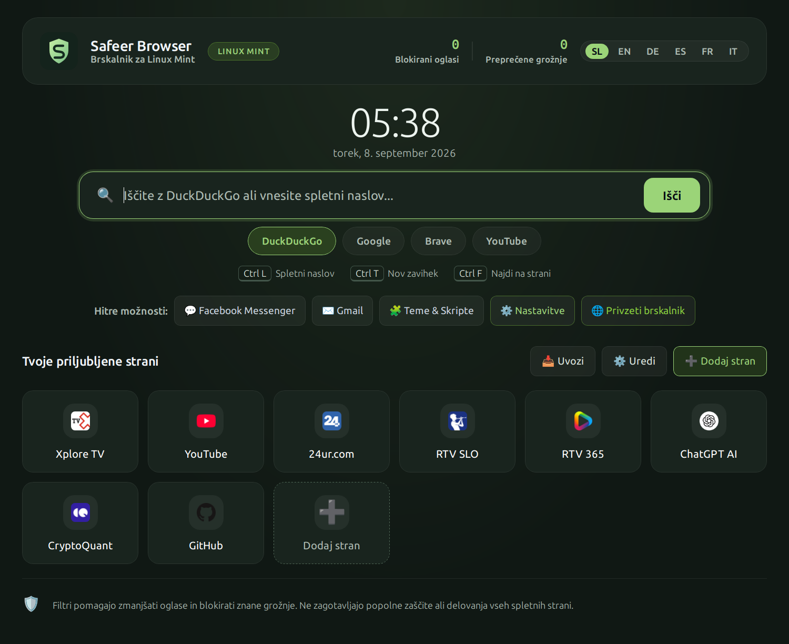

Fast and at home on your desktop.
Native Linux Mint desktop integration, instant startup without flashing, bookmark import and full control over themes.
Version 1.0.16 · DEBDownload and details ↗A modern, fast and independent browser. Built-in protection against intrusive ads and online threats, without unnecessary clutter — optimized for your computer, phone and smart TV.
Completely free. No subscriptions or hidden telemetry.

Purpose-built apps for three different environments. Choose a package for your device and start browsing faster.
Native Linux Mint desktop integration, instant startup without flashing, bookmark import and full control over themes.
Version 1.0.16 · DEBDownload and details ↗Designed for comfortable one-handed browsing, a responsive tab grid on tablets and minimal battery use.
Version 1.0.11 · APKDownload and details ↗Intuitive remote control, precise navigation between items and smooth video playback powered by Media3.
Version 2.1.81 · APKDownload and details ↗Safeer is optimized for each device, delivering responsive performance and a natural user experience.
Automatic filtering of intrusive ads, dangerous domains and trackers directly in the browser engine for a calmer, safer web.
Fast desktop shortcuts, larger touch targets on mobile and smooth D-Pad navigation between individual items on TV.
Fully open source, with no hidden telemetry, user profiling or subscriptions. Your bookmarks and data stay safely with you.
You do not need an account or subscription to download and use Safeer. All browser features are free and open source.
No. Safeer is a web browser that opens websites. It does not provide unauthorized access to paid content or replace TV provider subscriptions.
Each platform has a public GitHub repository where you can inspect the source code, suggest improvements or report a bug.